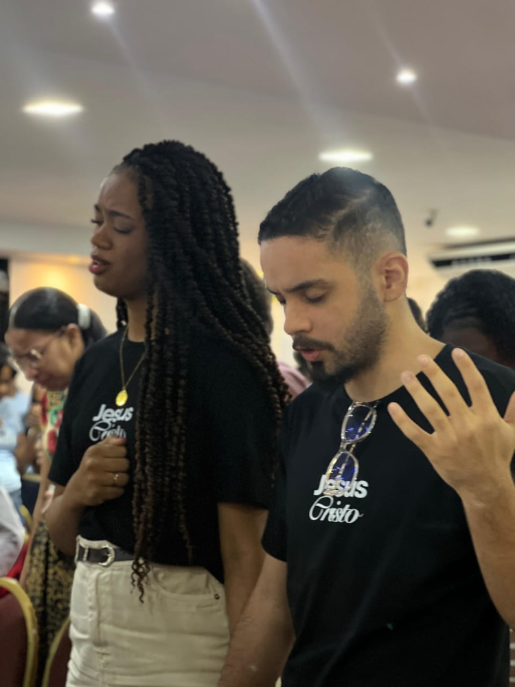
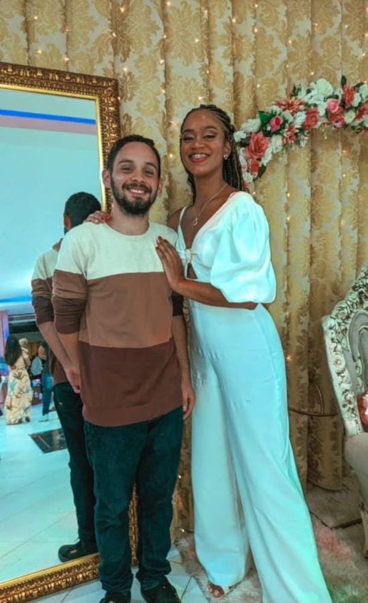
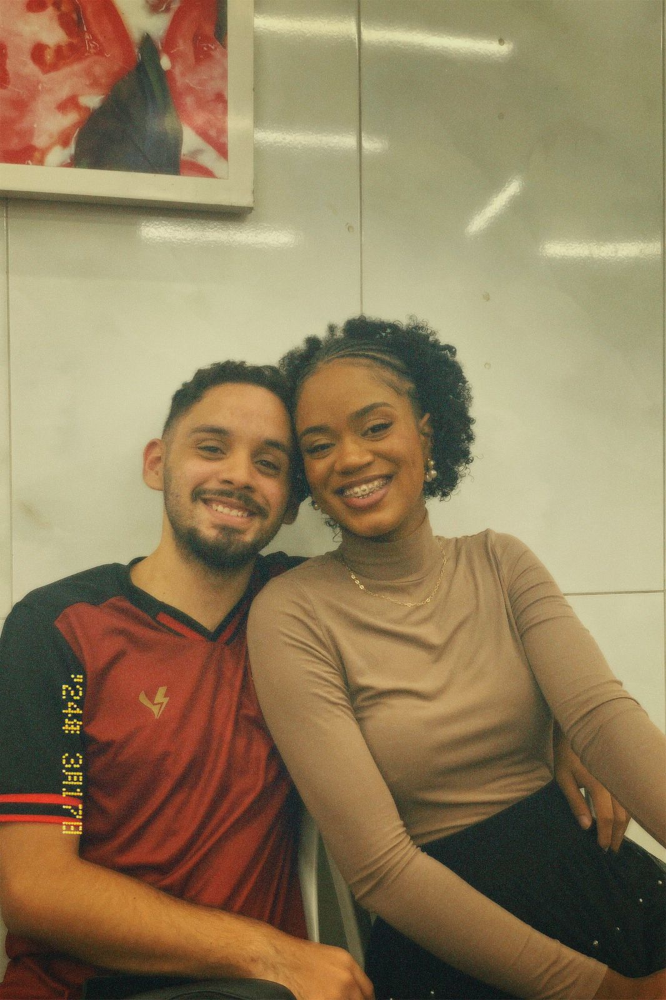
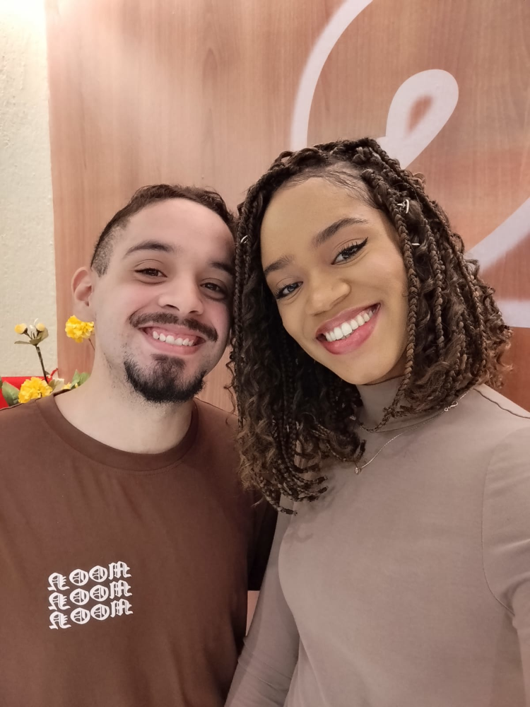

"O meu amado é meu, e eu sou dele; ele pastoreia entre os lírios." - Cântico dos Cânticos 2:16

Feliz dia dos namorados!(Provavelmente atrasado)
Mas tudo isso vai valer a pena, se no final você gostar desse presente
Mas queria compensar o fato de não poder comprar algo legal pra você, fazendo algo com meu próprio esforço
Sou extremamente sortudo de te ter na minha vida
Vamos ao que interessa
E declarações do meu amor s2
"Eu te faço feliz?" - Xayah
"Todos os dias da minha vida" - Rakan
"O quanto você me ama?" - Xayah
"Mais do que ontem,menos que amanhã" - Rakan
"Eu queria poder viver mil vidas, só para poder te encontrar em todas elas" - Kirito
"Não importa onde eu esteja, sempre pensarei em você." - Tohru Honda
"Mesmo que o mundo acabe amanhã, eu ainda te amaria hoje." - Tomoya Okazaki
"Se eu pudesse viver minha vida novamente, eu encontraria você mais cedo para poder te amar por mais tempo." - Violet Evergarden
"Eu esperaria mais 500 anos para encontrar você. Mil anos. E se esse é todo tempo que nos foi concedido, a espera valeu a pena" - Rhysand
"Não me instes para que te deixe, e não mais te siga. Porque aonde quer que tu fores, irei eu, e onde quer que pousares à noite, ali pousarei eu; o teu povo é o meu povo, e o teu Deus é o meu Deus. Onde quer que morreres, morrerei eu, e ali serei sepultada. Que o Senhor me castigue com todo o rigor se outra coisa, que não a morte, me separar de ti." - Rute 1 16-17
"O amor é paciente, o amor é bondoso. Não inveja, não se vangloria, não se orgulha. Não maltrata, não procura seus interesses, não se ira facilmente, não guarda rancor. O amor não se alegra com a injustiça, mas se alegra com a verdade. Tudo sofre, tudo crê, tudo espera, tudo suporta." - 1 Coríntios 13:4-7
"O meu amado é meu, e eu sou dele; ele pastoreia entre os lírios." - Cântico dos Cânticos 2:16
E sinceramente esse presente nem é digno de tudo que você merece, e eu prometo que muito em breve vou poder te proporcionar tudo que voc~e merece ter
E sinceramente esse presente nem é digno de tudo que você merece, e eu prometo que muito em breve vou poder te proporcionar tudo que você merece ter
Te amo, minha noiva, mal posso esperar para te chamar de esposa.